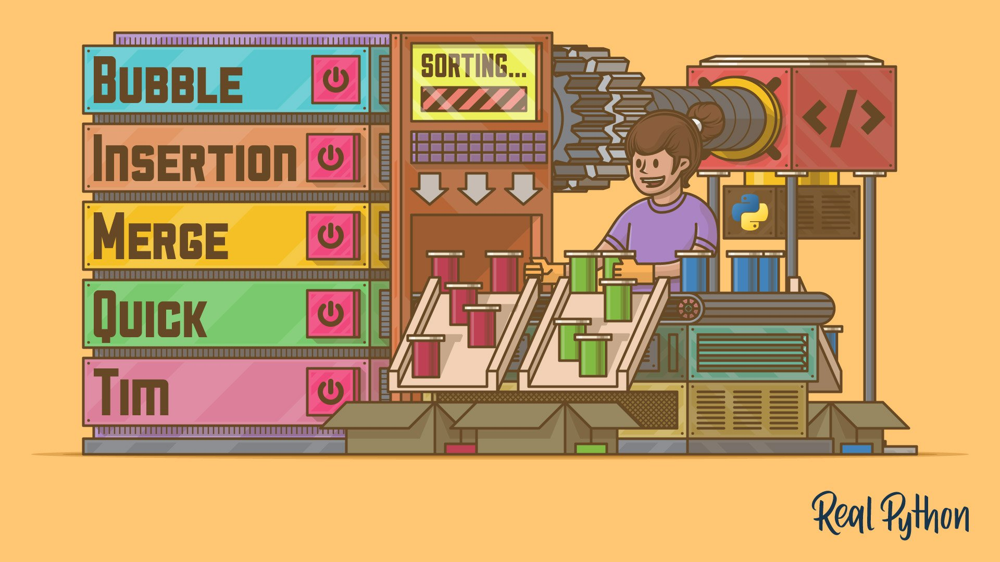

Profile
"The five most efficient cyber defenders are: Anticipation, Education, Detection, Reaction and Resilience.
Do remember: "Cybersecurity is much more than an IT topic."
Stephane Nappo
A few words about me
I consider myself a tolerant and respectful person with open mind and quite honest. I want to continuously improve
my skills, my knowledge and my career. I really like to listen people stories and backgrounds and their different
experiences around the world.
Philosophy
I belive in ethic and moral not in imposed rules that you "have to" do or follow.
I believe life is made from different shades of grey, not from black and white. Furthermore, as a human being with
rationality, I think it is our duty to take care of the world and treat others as one would like others to treat
oneself. This way of perceiving reality affects my beliefs and my way of behaving. Summarizing on several points:
- Pragmatic
- Honest
- Respectful
- Open-minded
- Coherent
Interests & Hobbies
I'm passionate about technology and human behavior, both determine almost all my interests and hobbies:
- Web Developing
- Football and Tennis
- Gym
- Manga and Anime
- Visiting new places
- Meeting people
- Having new experiences
Education
Energy and competent IT engineer, passionate about cybersecurity and secure development.
Summer English School - Twin English Centre Eastbourne
2 July 2012 - 16 July 2012
When I was 13 I lived in England for two weeks to improve my english and I've completed an english language training
program. I'm used to traveling and settling in new places from an early age and it's easy for me to relate to new people.
High School - Alfonso Maria De Liguori
2012-2017
I graduated in 2017 from the Alfonso Maria de Liguori high school when I was 18 years old. I have actively
participated in many extracurricular projects including "Mathematics' Olympics" and courses in art and photography.
Scientific subjects have always fascinated me and since I was a child I have had an interest in computer science.
Thanks to this passion, I had no doubts about the university choice at the end of my high school career.
Bachelor's Degree - Università degli Studi di Napoli Federico II - Computer Science
2017-2020
I started my university career with enthusiasm at the new headquarters in "San Giovanni a Teduccio". During the
three years I took to graduate, I learned basic knowledge about:
- Object oriented programming
- Computer Architecture
- Databases
- Computer Networks
- Linux Operating Systems
- Multithreading Programming in C and C++
- Software development in Java
- Real Time Systems
I wrote my thesis on the purpose of fuzz testing for software analysis, with some practical examples with the AFL
tool.
Cyber Challenge IT - Università degli Studi di Napoli PARTHENOPE
2020
During the first year of my master's degree I attended the "CyberChallenge" where I had the opportunity to attend
courses totally focused on cyber security and to deepen my knowledge in the following topics:
- Network Security
- Software Security
- Web Security
- Access Control
- Hardware Security
- Cryptography
The courses were alternated with theoretical lessons and practical lessons in which I faced and solved many CTFs for
educational purpose. At the end of the course I, together with the rest of the group, participated in an
"Attack / Defense" ctf.
Master's Degree - Università degli Studi di Napoli Federico II - Cyber Security
2020-2022
I enrolled in the master's degree as soon as I graduated and in the second year I chose to focus my studies on Cyber
Security. During these two years I have taken part in many group works and I improved my teamwork skills.
I had the opportunity to study and deepen my knowledge in the following topics:
- Web and Real Time Communication
- Network Security
- Software Architecture Design
- Algorithms and Data Structures
- Systems Evaluation
- Secure System Design
- Linear Mathematical Programming
- Software Security
- Malware Analysis
- Advanced Computer Programming
- Computer Architectures
- Computer Systems Designs
- VHSIC Hardware Description Language
Skills
I'm very determined and willing to learn and improve myself more and more. During my five years at Federico II
University I improved my problem solving skills, adapting myself, every time, to the times for the delivery of group
and individual works.
Programming Languages
Without ever focusing on a single language, I acquired skills for object-oriented programming, multithreading
programming, restAPI mechanisms, scripting, client-side and server-side programming in the following languages:
- Java
- JavaScript
- Python
- C
- C++
- Rust
- PHP
- Swift
- Dart
Web Developing
During my career I have used several tools and frameworks for web development, including:
- Spring Boot
- Node.JS
- Flask
- Django
I am familiar with the following file types:
- XML
- XLS
- HTML
- CSS
- YML
- JSON
I have a basic knowledge of the following platforms:
- Google Cloud Platform
- Amazon AWS
- Hosting Aruba
- Altervista
Security
I have experience with many security tools:
- Scanning & Enumeration
- Metasploit
- Hydra
- Nmap
- OWASP ZAP
- BurpSuite
- Wireshark
- Sqlmap
- Whois
- Dirbuster
- Tcpdump
- Netcat
- Debug & Testing
- GDB
- PwnTools
- IDA
- Ghidra
- American Fuzzy Loop (AFL)
- Secure Developing
- Kubernates
- Docker
- Keycloak
- Vault
- Spring Security
- Openssl
Networking
I have a basic knowledge of the following protocols:
- HTTP
- TCP
- UDP
- TLS
- SSL
- DTLS
- WEBRTC
- IPv4/IPv6
- IPSEC
- DNS
- SIP/SDP
- ICE
- STUN/TURN
- WEP/WPA
- RTP/RTCP
- SRTP
- DHCP
- NAT
- FTP
- IMAP/POP3
- SMTP
- ICMP
Other Skills
- Advanced knowledge of IT databases including Oracle, MySQL, MongoDB.
- Exemplary problem-solving and multitasking abilities.
- Familiar with Linux and Unix server management.
- Superior written and verbal communication skills.
Projects
ActiveMQ - Java JMS - Java RMI - Proxy/Skeleton
Advanced Computer Programming
Collections of projects written in java. It contains Messaging examples using Java JMS and ActiveMQ,
and middleware technologies such as Java RMI and the Proxy / Skeleton pattern
Open on GitHub
gRPC Client-Server Rust
Software Security
The project focuses on the Rust programming language. A client-server architecture was created through the
use of the open-source gRPC framework. The Protocol Buffers were used for the implementation of the application.
The whole project aims to highlight the security aspects present in Rust by comparing them with the main
vulnerabilities that are not managed in C.
Open on GitHub
Video Conference
Web and Real Time Communication
For this project, a web server in Node.JS was created which allowed us to implement functions for access control,
validation, registration and login, session control and authentication. For the implementation of the video
conference Janus-Gateway
was used, which implements webRTC. It was installed and configured through the Docker container that Ubuntu was
running on. Then, through the official documentation, the video.js file was created containing all the functions
necessary for a correct functioning.
To make it work even in private networks or behind firewalls, two servers (Stun and Turn) were configured.
Open on GitHub
Benchmark - Workload Characterization - Performance Analysis - Reliability - FFDA
Systems Evaluation
Collection of 6 projects which include:
- Benchmark - Comparison of two MacBooks
- Workload Characterization on real dataset
- Performance Analysis
- Reliability Exercise
- Log Analysis of Mercury and Bg/L (FFDA)
For the simulation of the requests to the web Server we used Jmeter and for
the data analysis we used Matlab, Python and JMP.
Download Paper
Vulnerable Web App - CTF
Network Security
A Flask web server, a mySql database, an ubuntu container (attacker) and a script to simulate access by
another user were used for the realization of the CTF. It is assumed that the attacker is already inside the private
network of the company and that from there he begins his path of provilege escalation to obtain root permissions.
Open on GitHub
Develop of Secure Application
Secure Systems Design
Microservices web application. Three microservices have been created: Order-Service, Menu-Service and
Gateway-Service; for the management of restaurant orders.
We referred to the NIST families of low to mid level controls. AC, IA, AU, SC family controls have been
implemented with the use of Spring Boot,
KeyCloack and Vault.
Docker images have been created for the three microservices, for the MongoDB database and for an nginx proxy.
After that the project was put on Google Cloud Platform thanks to the GKE (Google Kubernates Engine),
we obtained a domain name through DuckDns.org and obtained the certificates for HTTPS through Let's Encrypt.
Download Slides
Key Exchange RSA
Cryptography
Implementation of two webSockets in python that use symmetric cryptography (AES) for message exchange,
and asymmetric cryptography (RSA) for key exchange.
Open on GitHub
Sorting Algorithms
Algorithms and Data Structures
Collection of sorting algorithms written in C++.

Open on GitHub
Green Town
Software Architecture Design
The backend of the application is written in python and a Flask server is used. The front-end of the
application is written using Flutter,
a google's open-source framework.
Open on GitHub
Driver communication via a parallel interface
Computer System Design
I have written a driver to receive a vector of K bytes through a serial device, using the interrupt mechanism. The
received elements are stored only if the first two bits of the byte are high, while otherwise they are not stored. At
the end of the reception, if less than K characters have been stored, the receiving system must send an appropriate
message (e.g. a specific byte) to the transmitting system via a properly connected serial device, and make sure that
the message has been read before disable reception interruptions
Download Paper